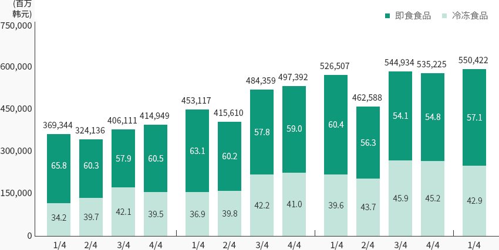
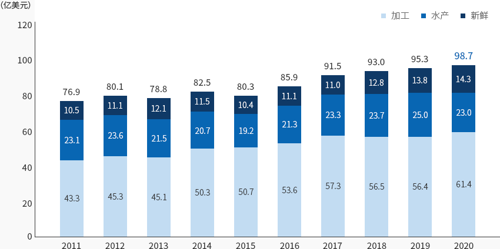
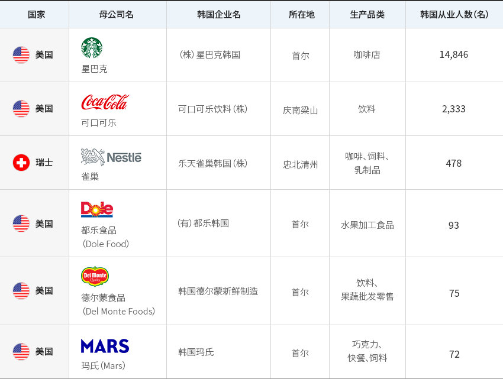
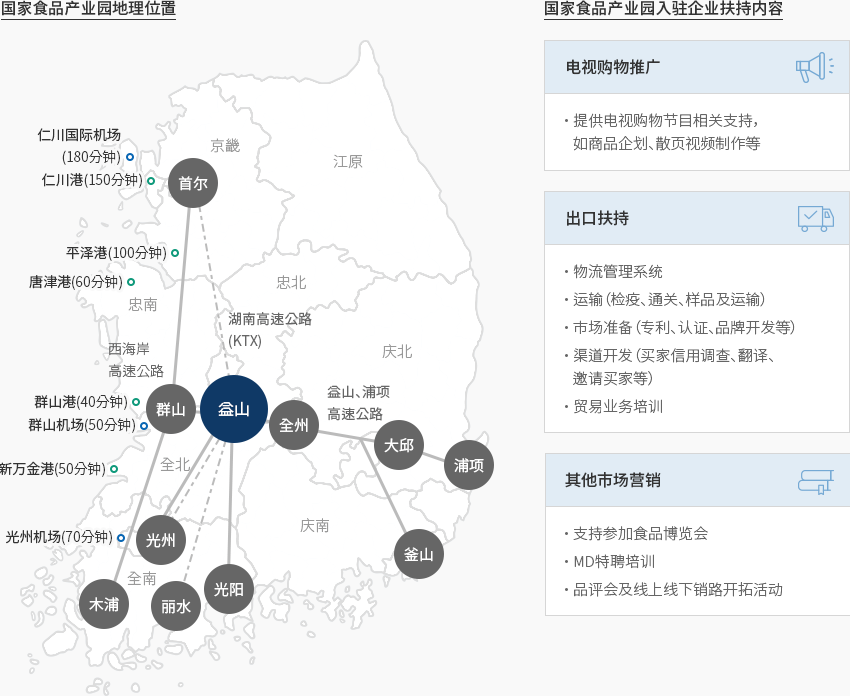

食品
- Home
- Why KOREA
- 产业
- 食品
-
韩国加工食品的世界地位 不断提升 关闭内容韩国加工食品的世界地位 不断提升2019年，韩国食品市场规模为1287亿美元，仅占全球食品市场的1.9%。
但最近随着中国及东盟等新兴国家市场上的优异表现及全球对韩国加工食品的需求扩大，
出口迅速增长，保持增长势头。得益于东南亚及大中华区市场对韩国产加工食品的大量需求，以及地理优势等因素，
韩国食品产业从内需转向出口，逐渐增加出口比重，正持续扩大产业规模。韩国食品产业采取多项措施，确保了增长势头，如积极开拓海外市场，提高出口规模，
以高附加值产品为中心构建出口结构，扩大适用自由贸易协定，积极与海外企业合作等。最近，还积极应对单人家庭增加等人口结构的变化，也在不断提升新产品的研发力度，以满足各类需求。
在新冠疫情下，非接触式流通渠道普及，家庭取代餐成为食品产业的新增长动力。"家庭取代餐(季度)销售情况"(单位：百万韩元, %)家庭取代餐(季度)销售情况 季度, 合计 季度 即食食品 冷冻食品 合计 1/4 65.8 34.2 369,344 2/4 60.3 39.7 324,136 3/4 57.9 42.1 406,111 4/4 60.5 39.5 414,949 1/4 63.1 36.9 453,117 2/4 60.2 39.8 415,610 3/4 57.8 42.2 484,359 4/4 59.0 41.0 497,392 1/4 60.4 39.6 526,507 2/4 56.3 43.7 462,588 3/4 54.1 45.9 544,934 4/4 54.8 45.2 535,225 1/4 57.1 42.9 550,422  ※ 资料来源：农林畜产食品部、韩国农渔村食品流通公社(2020)，《2019加工食品细分市场现状-取代餐市场》
※ 资料来源：农林畜产食品部、韩国农渔村食品流通公社(2020)，《2019加工食品细分市场现状-取代餐市场》 -
食品产业 保持稳定增长势头 打开内容食品产业 保持稳定增长势头得益于经济增长和家庭消费扩大，韩国食品产业（食品+饮料）在70年代以后持续增长。
2019年韩国食品产业生产规模为96.5万亿韩元，2007年以来的年均增长率达到5.9%，
高于同期制造业（4.2%）的年均增长率。食品产业在制造业中所占比重也持续提高，
企业数、产值、附加值较2007年均有增加。"家庭取代餐的季度销售情况"(单位: 家, 10亿韩元, %)家庭取代餐的季度销售情况 2007, 2016, 2019, CAGR(‘07→’19) 2007 2016 2019 CAGR
(‘07→’19)企业数 家 4,257 5,274 5,797 2.6% 较制造业 (%) 6.9 7.7 8.3 产值 10亿韩元 48,727 86,682 96,500 5.9 较制造业 (%) 5.1 6.1 6.2 附加值 10亿韩元 19,473 32,125 35,904 5.2 较制造业 (%) 5.9 6.5 6.4 ※ 资料来源：韩国统计厅矿业制造业调查2020年，韩国加工食品出口额达到61.4亿美元，占农水产食品出口总额的62.2%。"加工食品出口趋势"加工食品出口趋势 年度, 加工 , 水产, 新鲜 分类 2011 2012 2013 2014 2015 2016 2017 2018 2019 2020 加工 43.3 45.4 45.2 50.3 50.7 53.6 57.3 56.5 56.4 61.4 水产 23.1 23.6 21.5 20.7 19.2 21.3 23.3 23.7 25.0 23.0 新鲜 10.5 11.1 12.1 11.5 10.4 11.1 11.0 12.8 13.8 14.3 合计 76.9 80.1 78.8 82.5 80.3 85.9 91.5 93.0 95.3 98.7
※ 资料来源：韩国农林畜产食品部（2020），《农林水产食品进出口动向及统计》得益于中国、美国、东盟等主要出口市场对韩国加工食品的需求坚挺，加之疫情期间对取代餐需求增加，
韩国加工食品的出口规模实现持续增长（2010年以后的年均增长率为6.8%）。
除了饼干类、面类等传统出口产品外，全球对酱料类的需求扩大，使得加工食品出口整体增长。" 各品类加工食品出口趋势 "(单位 : 千美元, %)各品类加工食品出口趋势 2019, 2020, 增减率 2019 2020 增减率 饼干类 440,895 518,713 17.6 面类 612,041 792,255 29.4 饮料 421,997 410,420 △ 2.7 酒类 383,739 323,337 △ 15.7 咖啡类 274,320 278,561 1.5 咖啡类 255,872 318,762 24.6 ※ 资料来源：韩国农林畜产食品部（2020），《农林水产食品进出口动向及统计》 -
富有魅力的试验台 走向全球市场 打开内容面向全球市场的 富有魅力的试验台星巴克韩国由星巴克与易买得合作设立（星巴克32.5%、易买得67.5%），
是星巴克进驻国家中具有代表性的成功案例。自1999年在梨花女子大学开设第1号店后，
星巴克韩国于2016年实现销售额1万亿韩元。2018年，星巴克韩国的销售额及利润分别同比增长20%和24.8%。1979年，雀巢韩国以合资公司的形式进军韩国市场。巢采取积极的本地化战略，根据韩国人的口味改良Taster’s Choice
（金装速溶咖啡）、NESCAFÉ（雀巢咖啡）、Nesquik等全球人气产品，引领韩国食品市场潮流。雀巢通过与现场调查部门、总部研发部门紧密合作，调查当地消费者喜好及特点，为其定制产品。此外，
为积极开展本地化，还采取各项措施，如招聘本地职员，开展符合本地市场环境的差异化营销活动，
根据本地节日积极开展促销等。
不仅如此，雀巢还与农心、韩国可口可乐、斗山、南阳乳业等拥有韩国国内渠道的企业积极合作，
开拓销路，确保流通网络。进军韩国的国际食品企业 国家, 母公司名, 韩国企业名, 所在地, 生产品类, 韩国国内职员规模（人） 国家 母公司名 韩国企业名 所在地 生产品类 韩国国内职员规模（人） 美国 星巴克 （株）星巴克韩国 首尔 咖啡店 14,846 美国 可口可乐 （株）可口可乐饮料 庆南梁山 饮料 2,333 瑞士 雀巢 乐天雀巢韩国（株） 忠北清州 咖啡、饲料、乳制品 478 美国 Dole Food （有）都乐韩国 首尔 水果加工食品 93 美国 德尔蒙食品（Del MonteFoods） 韩国德尔蒙新鲜制造（株） 首尔 饮料、果蔬批发零售 75 美国 玛氏（Mars） 韩国玛氏（有） 首尔 巧克力、零食、饲料 72
※ 资料来源：农水产食品流通公社食品产业统计信息(ATFIS)
※ 注：韩国从业人数量以2018年为准 -
以未来朝阳领域为中心 实现食品产业生态升级 打开内容以未来朝阳领域为中心 实现食品产业生态升级韩国农林畜产食品部在《食品产业振兴三期基本计划》中提出五大政策领域和具体课题，
以建设食品产业的创新生态系统，使其发展为未来产业。就此，韩国政府将抢先发展家庭取代餐（HMR）、
老龄友好型食品、功能性食品等未来朝阳产业。此外，计划到2022年吸引160多家企业入驻食品产业集群，
并通过加强支持力度，改善企业落户条件，帮助企业解决技术问题等。与此同时，韩国政府还制定民间研发投资盘活方案，如选拔并重点扶持研发型创新食品企业，
持续挖掘税收减免特例对象技术等。
另外，韩国政府通过国家食品产业园扶持中心，面向入驻企业实施早期落户支持项目。"国家食品集群补贴项目情况"国家食品集群补贴项目情况 分类, 主要内容 分类 主要内容 投资补贴 大规模投资 全罗北道 : 投资金额的5%范围内提供补贴，上限为100亿韩元 益山市 : 投资金额的5%范围内提供补贴，上限为100亿韩元 普通投资 全罗北道 : 投资金额超过10亿韩元时，可在5%范围内提供补贴，上限为50亿韩元 益山市 : 投资金额超过10亿韩元时，可在5%范围内提供补贴，上限为50亿韩元 雇佣补贴 全罗北道 每人每月50万韩元，6个月，每家企业的补贴上限为5亿韩元 益山市 每人每月60万韩元，6个月，每家企业的补贴上限为2亿韩元 教育培训补贴 全罗北道 每人每月10~50万韩元，6个月，每家企业的补贴上限为5亿韩元 益山市 每人每月10万韩元，最长3年 员工定居补贴 全罗北道 每人每月10万韩元，最长3年 物流中心建设补贴 益山市 在投资300亿韩元以上部分的5%范围内提供补贴，每家企业的补贴上限为10亿韩元 中小企业补贴 设施运营资金（全罗北道）、市场开拓及营销费用（益山市） ※ 资料来源：国家食品产业园官方网站 -
由国家建设的 专业食品产业集群 打开内容由国家建设的 专业食品产业集群国家食品产业园位于全罗北道益山市，作为食品产业振兴的核心设施，由韩国农林畜产食品部、
全罗北道和益山市政府联手建设。- 为重新开发食品产业的产业价值并抢先应对急速增长的东北亚食品市场而建设国家级食品产业园（2017年12月）。
- 产业园区的目标是商业友好型全球食品产业园区，基于最佳的交通、物流和用水、IT及绿色能源等，致力于打造智能食品产业园区。
"韩国国内主要物流及港口区位"国家食品产业园地理位置- 仁川国际机场(180分钟)
- 仁川港(150分钟)
- 平泽港(100分钟)
- 唐津港(60分钟)
- 群山港(40分钟)
- 群山机场(50分钟)
- 新万金港(50分钟)
- 光州机场(70分钟)
国家食品产业园入驻企业扶持内容-
电视购物推广
- 提供电视购物节目相关支持，如商品企划、散页视频制作等
-
出口扶持
- 物流管理系统
- 运输（检疫、通关、样品及运输）
- 市场准备（专利、认证、品牌开发等）
- 渠道开发（买家信用调查、翻译、邀请买家等）
- 贸易业务培训
-
ㆍ运输（检疫、通关、样品及运输）
- 支持参加食品博览会
- MD特聘培训
- 品评会及线上线下销路开拓活动
※ 资料来源：国家食品产业园官方网站
※ 备注：支持对象等具体条件请咨询消费材料产业项目经理。"国家食品产业园土地规划"国家食品产业园土地规划 分类, 面积, 企业数, 引进行业 分类 面积 企业数 引进行业 产业设施区 战略食品区（集中培育） 350千平方米 50 - 功能性、生物技术等尖端技术融合食品、发酵食品
- 食品添加剂、白糖、淀粉等材料食品、食材、方便食品、大米加工食品、嗜好食品等
全球食品产业区（外商投资区） 450千平方米 30 - 外商投资企业入驻区
物流流通区 100千平方米 5 - 物流、集运等相关行业
- 流通（运输）相关行业
- 保管（低温及冷冻储藏）等
一般食品区（地区食品特色园区等） 500千平方米 50 - 烘焙类、糕点类、面类、饮料类、普通酒类
- 肉加工、乳加工、水产加工类
食品相关产业区 100千平方米 15 - 包装容器类
- 食品加工机械类
- 调味品和食品添加剂类
食品研发区 54千平方米 10 - 民间研究所、企业、大学附属研究所等
企业扶持设施区 94千平方米 6 - 食品功能性、安全性、包装中心
- 试用成套设备、租赁型工厂、扶持中心
主题公园区 244千平方米 - - 公园、全球主题公园、水库等
外迁园区等其他区域 413千平方米 - - 外迁宅地、污水处理厂等公共设施
- 道路、绿地等
※ 资料来源：国家食品产业园综合计划


Invest KOREA
食品/时装/美妆项目经理
鄭寶英
基干产业引进组
T.+82-2-3460-7888
选址信息推荐
产业园区信息
[Jeollabuk-do Iksan City] National Food Cluster (Small and Medium
Cooperation for Foreigners)
Click [Go to Detailed Information] to go to the relevant information screen of
Smart K-Factory service of Industrial Complex Corporation.
-
Complex nameNational Food Cluster (Small and Medium Cooperation for Foreigners)
-
Initial designation date2015.10.12
-
Designated area(m2)116,000
-
ManagementKorea Industrial Complex Corporation
-
Nearby RailwayIksan Station
-
Distance from station(km)16
-
Nearby AirportGunsan Airport
-
Distance from airport(km)59
-
Industrial water Supply capacity(ton/day)-
-
Affiliation local governmentJeollabuk-do Iksan City
-
Population283,496
产业园区信息
[Incheon Metropolitan City Seo-gu] I-Food Park
Click [Go to Detailed Information] to go to the relevant information screen of
Smart K-Factory service of Industrial Complex Corporation.
-
Complex nameI-Food Park
-
Initial designation date2017.06.05
-
Designated area(m2)281,471
-
ManagementIncheon Metropolitan City Office
-
Nearby RailwayBupyeong Station
-
Distance from station(km)22
-
Nearby AirportGimpo International Airport
-
Distance from airport(km)22
-
Industrial water Supply capacity(ton/day)1809(㎥/day)
-
Affiliation local governmentIncheon Metropolitan City Seo-gu
-
Population2,943,491
产业园区信息
[Jeollanam-do Yeongam County] Yeongam Specialized Agricultural Industrial
Complex
Click [Go to Detailed Information] to go to the relevant information screen of
Smart K-Factory service of Industrial Complex Corporation.
-
Complex nameYeongam Specialized Agricultural Industrial Complex
-
Initial designation date2014.02.20
-
Designated area(m2)116,307
-
ManagementJeollanam-do Yeongam County
-
Nearby RailwayImseong-ri Statioln
-
Distance from station(km)39
-
Nearby AirportGwangju Airport
-
Distance from airport(km)45
-
Industrial water Supply capacity(ton/day)1,070(㎥/day)
-
Affiliation local governmentJeollanam-do Yeongam County
-
Population54,045
产业园区信息
[Jeollanam-do Jangheung County] Jangheung Bio Food Industry Complex
[formerly: Haedang]
Click [Go to Detailed Information] to go to the relevant information screen of
Smart K-Factory service of Industrial Complex Corporation.
-
Complex nameJangheung Bio Food Industry Complex [formerly: Haedang]
-
Initial designation date2008.12.12
-
Designated area(m2)2,892,052
-
ManagementJeollanam-do Jangheung County
-
Nearby RailwayBoseong Station
-
Distance from station(km)22
-
Nearby AirportGwangju Airport
-
Distance from airport(km)69
-
Industrial water Supply capacity(ton/day)9,047(㎥/day)
-
Affiliation local governmentJeollanam-do Jangheung County
-
Population37,909
产业园区信息
[Gangwon-do SokchoCity] Daepo 1st Agricultural Industrial Complex
Click [Go to Detailed Information] to go to the relevant information screen of
Smart K-Factory service of Industrial Complex Corporation.
-
Complex nameDaepo 1st Agricultural Industrial Complex
-
Initial designation date1989.12.30
-
Designated area(m2)177,280
-
ManagementGangwon-do SokchoCity
-
Nearby RailwayGangneung Station
-
Distance from station(km)70
-
Nearby AirportYangyang International Airport
-
Distance from airport(km)17
-
Industrial water Supply capacity(ton/day)2441(㎥/day)
-
Affiliation local governmentGangwon-do SokchoCity
-
Population82,343
产业园区信息
[Chungcheongbuk-do Jincheon County] K-Food Valley [formerly:
Songdu]
Click [Go to Detailed Information] to go to the relevant information screen of
Smart K-Factory service of Industrial Complex Corporation.
-
Complex nameK-Food Valley [formerly: Songdu]
-
Initial designation date2016.07.08
-
Designated area(m2)831,966
-
ManagementChungcheongbuk-do Jincheon County
-
Nearby RailwayJeungpyeong Station
-
Distance from station(km)22
-
Nearby AirportCheongju International Airport
-
Distance from airport(km)27
-
Industrial water Supply capacity(ton/day)5,782(㎥/day)
-
Affiliation local governmentChungcheongbuk-do Jincheon County
-
Population81,949